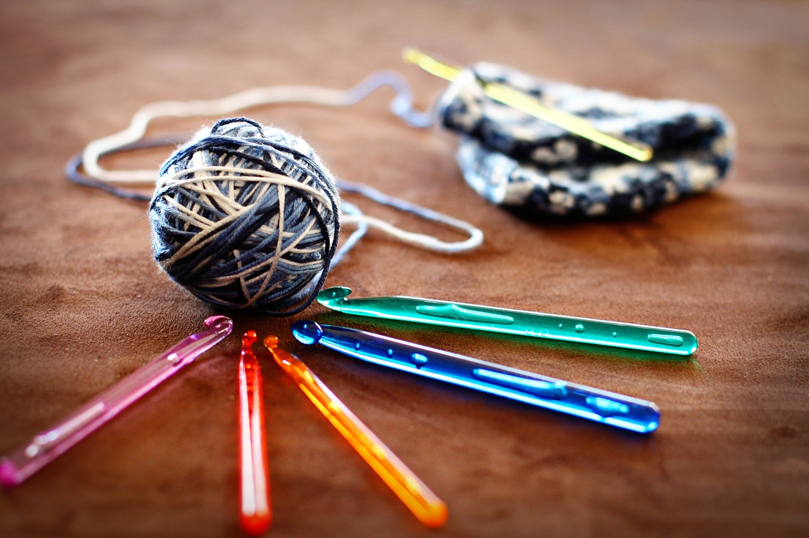

Get updates from Opus Grows
Be in the know with news, tips, and special offers
Receive inspiration and growing tips
Why Opus?
Good soil is the best TLC you can give your plants! Our exceptional ingredients are carefully sourced, and our
potting soil reaches you just days after being blended at our facility. No middlemen, no warehousing.

For Home
Looking for the right soil for your potted plants, or just interested in sampling Opus Grows? Look no further. We
deliver straight from our family-owned mixing facility in Oregon to your door.
For Wholesale
Interested in a wholesale order? Learn more about how we can help. We move our soil quickly. From its creation at
our facility to its arrival at your location, we aim for a maximum of two to three weeks.
Only the Best
Ingredients
From sourcing the finest ingredients to crafting perfectly balanced recipes, we hold ourselves to the highest
standards
when creating healthy soil biology for you and your plants. Explore a few of our core ingredients:
Coconut Coir Fiber
Improves water retention by leaps & bounds (absorbing seven times its